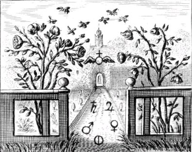
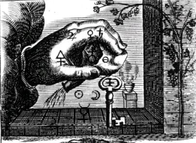
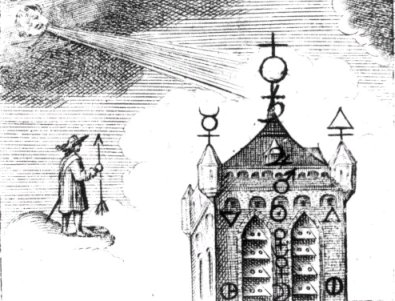
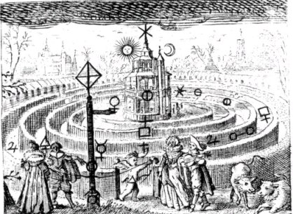
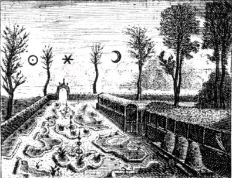
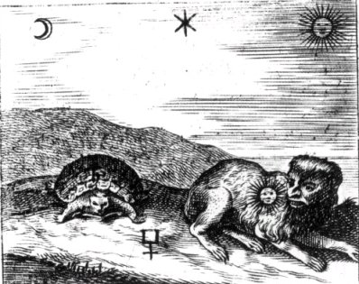

Emblema XXVII.
revu le 8 mai 2002
Qui Rosarium intrare conatur Philosophicum absque clave, assimilatur homini ambulare volenti absque pedibus.
(Celui qui tente d’entrer sans clé dans la Roseraie des Philosophes est comparé à un homme qui veut marcher sans pieds1.)
La Roseraie des Sages s’orne de mille fleurs,
Mais de puissants verrous ferment toujours sa porte.
Sa clé unique est, pour le monde, chose vile2 :
Si tu ne l’as, tu veux courir privé de jambes.
Tu affrontes en vain les pentes du Parnasse
Quand sur le sol uni tu te tiens à grande peine3.
Il est écrit d’Erichthonios qu’il naquit de la semence répandue à terre alors que Vulcain était aux prises avec Pallas4, déesse de la Sagesse, et que ses pieds étaient non d’un homme mais d’un serpent. Ils lui ressemblent, ceux qui, sans le concours de Pallas, et comptant uniquement sur l’aide de Vulcain, engendrent des enfants qui sont de toute évidence des avortons sans pieds, qui ne peuvent ni s’alimenter, ni être utiles à autrui5. Il est lamentable de voir un homme avancer à la manière d’un quadrupède, c’est-à-dire en se servant à la fois des pieds et des mains ; mais il est bien plus lamentable encore de le voir entièrement privé de jambes et utilisant, à leur place, les bras. Ils paraissent avoir dégénéré et être passés à l’état de vers, puisqu’ils avancent à la manière des vers et des serpents. Les deux jambes sont en effet des membres faisant partie de l’organisme humain, sans lesquels on ne peut marcher d’une façon véritable, de même qu’on ne peut voir sans yeux, ou saisir sans mains les choses tangibles. De la même manière la Médecine, aussi bien que n’importe quel art opératif, possède, dit-on, deux jambes sur lesquelles elle se tient : l’expérience et le raisonnement6 ; si l’une ou l’autre fait défaut, l’art est mutilé, bancal, il n’est pas parfait dans ses traditions et ses préceptes et il n’atteint pas son but.
La Chymie trouve par-dessus tout sa joie dans deux sujets (qui lui tiennent lieu de jambes) : l’un est la clé, l’autre la courroie du verrou7. Par eux, la roseraie philosophique, fermée de tous côtés, s’ouvre, et son accès est offert à ceux qui entrent d’une façon légitime. Si l’un d’eux fait défaut, celui qui veut entrer sera semblable à un homme infirme des pieds qui s’efforcerait de devancer un lièvre à la course. Qui s’introduit sans clé dans ce jardin qu’une clôture ou une haie ceignent de toutes parts imite le voleur qui, venant dans la nuit ténébreuse, ne discerne rien de ce qui pousse dans la roseraie et ne peut jouir des biens qu’il voulait dérober. La clé est en effet une chose très vile que l’on appelle pierre connue dans les chapitres, elle est la racine de Rhodes8 sans laquelle le germe ne peut pousser, le bourgeon se gonfler, la rose fleurir et déployer ses mille pétales. Mais, dira-t-on, où faut-il rechercher cette clé ? Je réponds avec l’oracle qu’on devra la rechercher là où l’on affirme que furent retrouvés les ossements d’Oreste, LA OU l’on pourrait trouver à la fois LES VENTS, CE QUI FRAPPE, CE QUI REPOUSSE LE CHOC ET LA DESTRUCTION DES HOMMES, c’est-à-dire, comme Lynchas sut l’interpréter, dans un atelier de forgeron9. Dans le langage de l’oracle en effet les vents représentaient les soufflets, ce qui frappe, le marteau, ce qui repousse le choc, l’enclume, et par la destruction des hommes il entendait le fer. Le chercheur trouvera véritablement cette clé dans l’hémisphère septentrional du Zodiaque et la courroie du verrou dans l’hémisphère méridional, s’il sait bien dénombrer et distinguer les signes10. Lorsqu’il en aura pris possession il lui sera facile d’ouvrir la porte et d’entrer. A l’entrée même il verra Vénus avec son amant Adonis11. Car du sang de celui-ci cette déesse teignit les roses blanches en pourpre. On y voit le dragon, comme au Jardin des Hespérides : préposé à la garde des roses, il veille12. Le parfum des roses est, dit-on, renforcé grâce aux aulx que l’on plante à proximité, et cela en raison du degré excellent de chaleur que possède l’ail et qui permet aux roses de résister aux poisons froids13. Les roses réclament en effet la chaleur du soleil et de la terre avant d’acquérir une couleur et une odeur très agréables aux yeux et aux narines14. Ajoutons que la fumée du soufre commun blanchit les roses rouges dans les parties qu’elle atteint et qu’à l’inverse, l’esprit du vitriol ou de l’eau-forte leur confère une couleur rouge intense et durable15. Car le soufre commun est opposé au soufre philosophique, bien qu’il soit impuissant à le détruire, mais l’eau dissolvante a de l’amitié pour lui et lui conserve sa couleur16. La rose est dédiée à Vénus à cause de sa grâce par laquelle elle précède toutes les autres petites fleurs. Car elle est une vierge que la nature arma pour éviter qu’elle ne soit violée impunément et sans vengeance17. Les violettes sont dépourvues d’armes et on les foule aux pieds18. Les roses cachées au milieu des épines possèdent une chevelure blonde au-dedans et un vêtement vert au-dehors19. Nul, s’il n’est sage, ne pourra les cueillir et les séparer des épines ; sinon, ses doigts feront l’épreuve de leurs aiguillons. De même personne, sauf un homme très prudent, ne cueillera les fleurs des philosophes, s’il ne veut pas faire l’expérience des dards et des abeilles dans les ruches, et du fiel dans le miel20. La plupart sont entrés dans la Roseraie avec des mains avides, mais ils n’ont rien emporté que souffrance, c’est-à-dire qu’ils ont perdu leur huile et leur peine. C’est pourquoi Bacusser dit dans la Tourbe :
" Nos livres paraissent causer beaucoup de dommage à ceux qui lisent nos écrits une, deux ou trois fois seulement, car ils sont frustrés de l’intelligence de ces livres et de tout leur soin et, ce qui est le plus fâcheux, ils perdent les biens, le travail et le temps qu’ils ont consacrés à cet art".
Et, peu après :
" Alors qu’on pense avoir opéré et posséder le monde, on se retrouvera n’ayant rien dans les mains ".
Notes1. C'est de l'Entrée du Palais du Roi qu'il est question ici, ou si l'on nous comprend bien, de la nécessité de posséder le premier dissolvant qui permet de dissoudre les corps du Soleil et de la Lune. La gravure donne à voir un homme amputé des deux pieds. Une illusion d'optique tend à nous faire observer que les pieds de l'homme sont en fait, recouverts de boue, mais cela est une erreur. Le personnage contemple d'un air mystérieux une porte, fermée à trois verroux, surmontée d'une mérelle et encadrée par trois pignons pointus, où l'on devine sans peine les pointes du trident de Poséidon. A droite et à l'arrière plan, on devine, immédiatement sous l'arbre [qui doit être un chêne] les symboles des luminaires, et en bas de la bute, on voit les symboles planétaires. Notez que la Philosophia Reformata de Mylius propose une vue assez semblable. C'est l'emblème XVIII, qui représente les natures métalliques.

FIGURE I
(Le Lion d'Or ou Vinaigre des Sages, Goossen Van Vreeswijk, 1675)L'emblème XXVII montre un homme indécis, qui reste perplexe devant l'entrée fermée du Palais du roi. Mais s'il est patient et use d'esprit, il verra sans peine que cette entrée triplement fermée peut être résolue dans les éléments de la figure I : il verra alors deux rosiers, le Nitre philosophique, c'est-à-dire le salpêtre vitriolé dont les parents sont situés dans le Bélier et le Taureau. Les lieux d'exaltation de Jupiter [Cancer] et de Saturne [Balance] l'aideront dans le calcul des poids.
La porte fermée hermétiquement, empèche d'accéder à un jardin où ont été disposés des carrés fleuris et herbeux. On trouve le même jardin dans l'une des gravures du Livre d'Abraham Juif, dont Flamel, dit-on, aurait connu le secret - cf. Fig. Hier. Cette gravure XXVII est très originale. Il est possible que la légende fasse allusion à une terre que l'on foule aux pieds, la creta fullina dont nous avons parlé ailleurs [1, 2, 3, 4, 5,]
2. Les alchimistes ont toujours professé que leur matière était vile et que tout le monde la possédait. Mais ce n'est pas tout à fait exact. Ce qui est vrai, c'est que la matière est très répandue ; mais encore faut-il la reconnaître, car elle n'est pas directement accessible. Il y a plus. Alors que les Adeptes affirment qu'il n'y a qu'une matière, force est de constater la nécessité d'employer plusieurs matières qui oeuvrent à la préparation de la pierre. Nous renvoyons à toutes les sections où nous développons cette idée. Les verrous dont parle la légende ne sont autres que les « fermetures » des métaux, qui, pour être efficaces dans l'oeuvre, doivent être « ouverts », c'est-à-dire transformés en chaux, comme les appelaient jadis, les chimistes, avant que Lavoisier n'est fait opérer une révolution dans la chimie, en découvrant le gaz oxygène. Cette ouvertue s'opère grâce aux hiéroglyphes disposés dans l'ouverture de la figure I.
3. il y a là quelque trait de cabale. C'est la terre que l'on foule aux pieds. Et c'est bien une certaine terre que l'Artiste [Cadmus, Hercule] doit élire avant de commencer son travail.
4. Pour Pallas-Athéna, voir Atalanta, XXIII. On connaît plusieurs Erichthonios : l'un fut le fils de Dardanos [son enfant fut Tros] et on le connaît comme le 3ème roi de Troie. Un autre Erichthonios fut le 4ème roi d'Athènes et c'est celui qui nous occupe ici. La légende raconte qu'un jour, alors qu’Héphaïstos poursuivait Athéna de ses ardeurs amoureuses, un peu de sa semence souilla la cuisse de la vierge déesse et tomba sur la terre, engendrant un enfant, Erichthonios, qui fut confié au trois filles de Cécrops, Aglauros, Hersé et Pandrosos. Erichthonios fut enfermé dans une corbeille reçue par Pandrosos, et Athéna recommanda aux trois soeurs de ne pas l’ouvrir. Mais, curieuses et impatientes, elles n'écoutèrent pas la déesse et ouvrirent l’étrange berceau. Elles virent l’enfant, flanqué de deux serpents, et furent si effrayées de ce spectacle qu’elles se jetèrent du haut de la citadelle d'Athènes. Plus tard, Érichthonios, devenu roi de cette ville, introduisit le culte d’Athéna dans son royaume et institua les fêtes des Panathénées. Son fils Pandion lui succéda. C'est bien sûr du Mercure qu'il est question, comme en témoignent les serpents qui accompagnaient l'enfant dans son berceau en osier, fermé.
5. Par cabale, il faut comprendre que rien ne sert de posséder le feu vulgaire si l'on n'a pas le feu secret, dénommé par Basile Valentin l'eau sèche qui ne mouille point les mains. Ce feu est le dissolvant dont se servent les alchimistes pour assurer le Bain des Astres.
6. voir l'Atalanta, XXI où la sagesse et l'usage sont ici remplacés par le raisonnement et l'expérience.
7. C'est-à-dire que la clef représente l'ensemble de matières préparées et que la courroie du verrou est le feu secret ou dissolvant [le Mercure]. Cyliani dit autrementJe vis alors deux superbes vases en cristal reposant chacun sur un piédestal du plus beau marbre de Carrare. L'un de ces vases était en forme d'urne, surmonté d'une couronne en or à 4 fleurons ; on avait écrit en lettres gravées dessus : matière contenant les deux natures métalliques. L'autre vase en cristal était un grand bocal bouché à l'émeri, d'une forte épaisseur, on avait gravé pareillement dessus ce qui suit : esprit astral ou esprit ardent, qui est une déjection de l'étoile polaire. [Hermès Dévoilé]On doit comprendre que la clef est formée de ces deux natures métalliques, et que la courroie du verroue, c'est-à-dire l'objet qui assure le mouvement ou la rotation du tout, si l'on préfère, est cet esprit ardent. Les quatre fleurons du vase dont parle Cyliani témoignent de l'origine chthonienne de ces natures métalliques.
FIGURE II
(Le Lion d'Or ou Vinaigre des Sages, Goossen Van Vreeswijk, 1675)C'est cette clef que l'on aperçoit à la figure II. C'est elle qui ouvre les métaux. Elle est accompagné du signe mercuriel, surmonté des signes des luminaires. Grâce à elle, l'Artiste pourra recueillir le Soufre [symbole sur la main, à gauche], aidé en cela du Sel [symbole à droite], moyennant la coopération de Saturne et de Jupiter, c'est-à-dire de la Balance [lieu de Justice] et du Cancer [le dernier signe de la dissolution]. Tout cela s'entend par la voie sèche comme le donne à voir le creuset en arrière plan.
8. sur Rhodes, voyez Atalanta, XXIII.
9. On raconte qu'Oreste mourut d'une morsure de serpent et fut enterré à Tégée, en Arcadie. Des siècles plus tard, un Spartiate guidé par un oracle retrouva la sépulture sous la forge d'un forgeron à Tégée. Cette histoire de forgeron semble bien constituer une piste sur les battitures de fer, oxyde noir magnétique, qu'on a évoqué en traitant du vitriol romain, dans l'Atalanta, XXV. Il s'agirait donc d'une indication supplémentaire sur le Soufre rouge.
10. Les signes du zodiaque ont été associés depuis des temps lointains à des pierres précieuses. On en trouve de différentes versions selon les époques. Ainsi, ce qu'écrit sur ce sujet par Henri-Corneille Agrippa [cf. Escalier des Sages] diffère de ce qu'écrit le père Kircher dans son Oedipus Aegyptiacus. Il semble que les traces les plus lointaines que nous possédions sur ces correspondances datent des Lapidaires Grecs. On consultera sur le sujet Les Lapidaires Grecs [R. Halleux, J. Schamp, Les Belles Lettres, 1985]. Mais, pour l'heure, il nous faut trouver les signes correspondant au septentrion [la clef] et dans le ciel méridional, à la courroie du verrou. Le premier cas ne pose guère de problème. En effet, dans le commentaire du Triomphe Hermétique de Limojon de Saint-Didier, nous avons été amenés à déterminer que le signe du Taureau correspondait au septentrion. S'il était besoin, nous ferions référence au Pilote de l'Onde Vive, traité des plus singuliers, rédigé par Mathurin Eyquem, sieur du Martineau [texte disponible sur le site hermétisme et alchimie] et que cite Fulcanelli. Dans le chapitre IV, intitulé l'AUTH, figure une gravure sur laquelle est représentée une sorte de rose des vents, rapportée au zodiaque. Ayquem écrit ensuite :« Cette figure qui est tout au bas, où est écrit Orient, c’est le caractère du Bélier : L - Celle qui suit le côté où est écrit Septentrion, s’appelle Taureau : M »
Mais il est vrai que pour brouiller le jeu, Eyquem ne manque pas de dire que le signe le plus septentrional est à l'Ecrevisse [Cancre, Cancer] et que le plus méridional est au Capricorne. Alors, que penser de ces correspondances ? Fulcanelli ne nous a-t-il pas mis en garde contre les attributions traditionnelles des planètes aux signes zodiacaux ? En grec, méridional se traduit par meshmbrinoV qui signifie à midi, c'est-à-dire en plein soleil, à l'heure où la cigale chante. Tel n'est pas le cas du septentrion [en grec arktoV] dont le sens est proche du latin et qui rappelle le chariot [amaxa], et par assonance phonétique arktouroV, qui renvoie au Bouvier, proche de la Grande Ourse. ArktoV est aussi le nom d'un Centaure ; mais cela nous renvoie dans des terres méridionales, c'est-à-dire au Sagittaire. Nous voyons ainsi que deux astres semblent évoqués par le septentrion et le Midi : Vénus et le Soleil ; c'est-à-dire le Taureau et le Lion.

FIGURE III
(Le Lion d'Or ou Vinaigre des Sages, Goossen Van Vreeswijk, 1675)La figure III nous montre au premier plan la citadelle du Palais fermé du roi, qu'on ne faisait qu'entrevoir dans la figure I, en arrière plan. Les métaux sont ouverts. Les deux premiers [Lune, Mercure] sont de la série mercurielle [cf. Monade Hiéroglyphique de John Dee] ; les trois suivants [Vénus, Soleil et Mars] sont de la série soufrée. A gauche, le signe du vitriol salpêtré ; à droite, celui du Nitre. De part et d'autre du Soleil, les hiéroglyphes de l'EAU et du FEU. Au chapiteau de gauche, le Mercure philosophique ; sur celui de droite, le Soufre. Plus haut, au centre, Cronos surmonté de la stibine de Jacques Tol [cf. Chemin du ciel Chymique]. A gauche, notre Artiste avec la flèche du Sagittaire. En haut, le vent du septentrion complète cette scène remarquable. Il faut à présent qu'Hercule nettoie les écuries d'Orgias [cf. Fontenay].
11. Adonis est semblable au soleil. Adonis [chez les Phéniciens] était Osiris chez les Égyptiens et Bacchus chez les Grecs. Certains mytographes mettent aussi en parallèle Adonis, Horus et Moloch ; ils le tiennent aussi pour le Soleil. Maier anticipe sur le chapitre XLI de l'Atalanta fugiens. Adonis est le symbole de la période de blancheur, au sortir du tombeau, signe du début de la réincrudation des Soufres.
12. Ce Dragon n'est pas celui de Babylone ; on a vu dans l'Atalanta, XXV, que le dragon babylonien était l'autre nom du vitriol romain. Ce dragon est l'hiéroglyphe hermétique du Mercure qui garde les pommes d'or ou les brebis [melon]. Mais, au vrai, il y a alors deux dragons préposés à la garde du trésor hermétique et non un seul. Ces dragons ont, curieusement, des gueules de lion et ils sont deux pour signifier le vert et le rouge.
13. Pline notait que l'ail éloignait des serpents et protégeait de la folie, deux attributs traditionnels du Mercure. Les prêtres de Babylone s'en servaient pour éloigner les mauvais esprits [on ne saurait mieux dire du Mercure à cette époque de transformation de la matière]. Dans l'Odyssée, Hermès donne de l'ail à Ulysse pour le mettre à l'abri des méfaits de Circé qui avait transformé ses compagnons en pourceaux. Enfin, les prêtres grecs le nommaient « rose puante ». En grèce toujours, l'ail jouait un rôle dans le culte d'Hécate, divinité infernale, non sans rapport avec Lucifer, notre Vénus qui paraît à l'aurore. Il ne faut pas s'étonner que cette liliacée soit évoquée à cette époque où les roses blanches se transforment en roses rouges, c'est-à-dire quand le Mercure commence à se volatiliser. Est-ce pour cete raison que s'est perpétuée en Grèce et en Inde cette tradition des bouquets de têtes d'ail attachées de laine rouge ? Substituez la pomme à la laine du mouton [melon, tous deux] et vous aurez déjà une image hermétique plus juste de l'allégorie. Il paraît que, de nos jours encore, les bergers des Karpates, avant de traire pour la première fois leurs brebis, se frottent les mains avec de l'ail béni [rapport avec la mérelle dans laquelle l'officiant met de l'eau benoîte], afin de protéger le troupeau contre les morsures de serpent ; c'est-à-dire qu'il faut protéger le Soufre rouge contre l'agression du Mercure, faute de quoi jamais le fixe ne l'emportera sur le volatil. L'ail se comporte ainsi comme un agent protecteur ; c'en est au point que les Egyptiens en avaient fait un dieu. Son rôle comme alexipharmacon à l'encontre du pouvoir pontique de Mercure est encore attesté du temps des Romains où il était interdit d'entrer dans le temple de Cybèle à ceux qui venaient de consommer de l'ail. Or, tout étudiant le sait, Cybèle, armée de ses Lions [Atalante et Hippoménè] est le symbole de l'athanor. L'ail enfin est reconnu pour avoir toutes sortes de propriétés organoleptiques...Avec un peu d'esprit, on pourrait même parler des « buveurs de sang », c'est-à-dire des vampires. Un petit trait de cabale nous apprendrait alors que si l'on fait correspondre le sang à l'Âme ou Soufre rouge, et le vampire au Mercure, et si l'on vient à présenter à ce vampire une gousse d'ail, celui-ci s'enfuira. Ainsi, trouve-t-on même dans la littérature fantastique des éléments intéressants, par analogie et allégorie, avec notre sujet.
FIGURE IV
(Le Lion d'Or ou Vinaigre des Sages, Goossen Van Vreeswijk, 1675)Cette scène étend, en le complétant, le symbolisme des figures I et III. Au centre, se dessine le Palais Fermé du Roi. Au premier plan, l'entrée par laquelle on parvient dans le jardin qui a la forme du labyrinthe de Salomon [n'oublions pas que le sceau de Salomon n'est autre que l'hiéroglyphe complet de l'eau pontique]. A droite, au premier plan, Arès et Taurus. Plus au centre, le couple alchimique. Nous n'insisterons pas sur les autres symboles qui nous entraîneraient trop loin. Toutefois, nous ne saurions trop insister sur l'espèce de réverbère que l'on voit au premier plan, à gauche de l'entrée. Il faudra, ici, que l'Artiste se souvienne de la scène du Petit Prince de Saint Exupéry. Et qu'il comprenne que se situe, ici, la lampe à huile des philosophes.
14. Il faut entendre l'alliance du Soufre rouge [Soleil] et du stibium des Sages [Terre]. Souvenons-nous, en effet, que le symbole de Vénus, retourné, est celui de la Terre que les alchimistes médiévaux ont fait prendre comme le symbole de la stibine. Voyez aussi la forme qu'affecte le hiéroglyphe céleste de Vénus, pris à l'Orient et à l'Occident. Quand Vénus se lève, pour prendre la forme d'Hesperus, elle doit d'abord apparaître comme Lucifer, la terre damnée des Sages. Voyez là-dessus l'humide radical métallique. Nous ajouterons qu'il n'y a que deux dispositions pour faire coïncider la Lune et Vénus, pour qu'elles forment ensemble le signe de Mercure. Si l'on donne à Vénus la forme d'Hesperus, Mercure peut se former à l'Orient, si la Lune est prise dans son dernier quartier et qu'elle précède Vénus dans sa marche. Même chose à l'Occident, sauf que dans ce second cas, la Lune doit suivre Vénus. En cas contraires, c'est-à-dire si la Lune précède Vénus ou si elle la suit, respectivement, ce ne sera pas le signe de Mercure qui sera réalisé, mais celui qui se rapproche de Neptune [association de la Terre et de la Lune hermétique].
15. Le premier cas est typique d'une réincrudation. Puisque ce qu'il faut ôter aux minéraux et métaux de la terre, c'est ce soufre commun que les alchimistes nomment aussi le soufre puant. A l'inverse, l'esprit de vitriol [acide sulfurique étendu d'eau] ou l'eau forte [acide nitrique] sont des produits intermédiaires dans la préparation du Mercure. Il y a aussi là une relation aux propriétés des bases ou des acides. En effet, on voit qu'il y a de l'acide là ou le papier de tournesol se trouve rougi. A l'inverse, il bleuit là où se trouve une base. La rose est évidemment prise là comme symbole de la pierre naissante, toute en puissance ; c'est une pierre où le Soufre rouge n'est pas encore totalement réincrudé et est encore, pour partie, sublimé dans le Mercure et garde trace de l'esprit pontique du Mercurius senex. Ce n'est pas autement qu'il faut comprendre ces aspérités, c'est-à-dire ses épines.
FIGURE V
(Le Lion d'Or ou Vinaigre des Sages, Goossen Van Vreeswijk, 1675)Nous voici enfin dans ce fameux jardin. L'Artiste a pu victorieusement pénétrer par cette porte, que l'on aperçoit maintenant de l'intérieur, au fond et à gauche. Du reste, on disitngue bien nos trois pignons qui sont identiques à ceux de l'emblème XXVII. Les luminaires encadrent cette scène d'aspect un peu sauvage, où l'on se rend compte que l'on n'est pas entré dans un jardin ordinaire : c'est là que l'Artiste devra se prémunir contre les assauts du dragon Laudon. Puisque ce jardin est celui des Hespérides. Cette gravure sur cuivre rappelle beaucoup le jardin du Livre d'Abraham Juif. Disons encore un mot sur l'étoile, qualifiée de seule étoile par Basile Valentin, c'est-à-dire anqoV monoV [par cabale, l'antimoine, c'est-à-dire l'albâtre des Sages].
16. C'est dire par là que l'une des matières de l'oeuvre est un sulfure ou un sulfate métallique. Le soufre philosophique est de deux sortes : Soufre blanc et rouge. Le soufre blanc correspond au squelette de la Pierre ; le soufre rouge à la teinture.
17. Il y a là un trait de cabale entre la rose et la rosée de mai. La roseraie se défend elle-même de l'intrusion d'un mercanti par les épines dont sont hérissées ses branches. Le Mutus Liber est une sorte de roseraie, comme en témoigne son frontispice. Et c'est aussi un livre fermé. Cette rose, tout armée par la nature, est l'équivalent de Pallas - Athéna qui sort, aussi toute armée, du cerveau de Zeus, fendu par Héphaistos [cf. Atalanta, XXIII]. Un passage des Fables Egyptiennes et Grecques [Pernety] vaut ici d'être cité :« Si l’on regarde Pallas dans cette occasion comme la Déesse des Sciences & de l’Etude, on peut dire, quant à l’Art Hermétique, qu’on aurait en vain la théorie la mieux raisonnée, & la matière même du Magistère appelée Vierge, fille de la Mer, ou de l’Eau, ou de Neptune, & du marais Tritonis, on ne réussira jamais à faire l’œuvre si l’on n’emploie le secours de Vulcain ou du feu Philosophique. »
Or, cette vierge contracte des rapports évidents avec Vénus. il faut donc que l'on relise ce que nous écrivons plus haut, quand nous faisons voir que la planète Vénus peut être considérée comme Aphrodite ou comme Gaïa. Ce point de symbolisme s'explique de lui-même dès lors qu'on connaît les rapports entre Pallas et Athéna ; voir Atalanta, XXIII note 1 où l'allégorie est discutée en 8 points. C'est le point 7 qui est important.
18. Les violettes consacrent les chaux métalliques alors qu'elles sont sublimées dans le Mercure. Le stade de la rose a déjà été dépassé depuis longtemps et les métaux sont « ouverts ». Qu'on les foule aux pieds donne une indication sur le Soufre blanc [creta fullina]. Sur la violette, on trouvera dans l'Oeuvre Secret d'Hermès, de Jean d'Espagnet, de quoi réfléchir.
19. Indication possible sur l'aspect des cristaux entre-croisés. Pierre Berthier - cf. Mercure - écrit qu'il a composé une pierre qui ressemble au pyroxène : le culot est blond ; un autre est vert-olive. Nicolas Flamel, dans ses Fig. Hiér. parle :« [...] du blond Soleil, c'est-à-dire par notre Feu, égal à celui du Soleil »
Le carbonate de protoxyde de fer a aussi une couleur blonde [cf. Mercure de Nature, où De Sénarmont parle de la synthèse des minéraux par la voie humide]. Dans la mythologie, le Soleil et Aphrodite ont, par tradition, la chevelure blonde. On voit que l'on est ramené à des sortes d'archétypes. Quant à la couleur verte, c'est celle que prend l'or en fusion [qui serait violet, vraie couleur de l'or selon Pierre Berthier]. Mais, on le sait, le vert est omniprésent chez les Adeptes, à commencer par leur Lion. Jacques Le Tesson a écrit un traité sur le sujet.

FIGURE VI
(Le Lion d'Or ou Vinaigre des Sages, Goossen Van Vreeswijk, 1675)Au détour du chemin, notre Artiste pourra tomber nez à nez avec de curieux habitants du Jardin des Hespérides et il verra de singulières associations, telles celle de la tortue et du lion. Dès lors qu'il saura que derrière la tortue se cache l'EAU et derrière le lion, le FEU, il comprendra le sens du symbole mis entre les deux animaux : le tartre. Ce sont les symboles placés en haut de l'image qui lui expliqueront en quoi l'étoile contracte des rapports avec le tartre. Pour E. Canseliet, il s'agirait du « truc » [trux] de l'oeuvre, c'est-à-dire de l'artifice qui permet de conjoindre les deux extrémités du vaisseau de nature.
20. Allusion probable au danger qu'il y a à trop vouloir pousser le feu et à « brûler les fleurs » selon l'expression consacrée. Seules, en effet, la Tempérance et la Prudence pourront ici servir de Force à l'Artiste, aidée par la justice dans le bon poids à accorder au calorique. Le « fiel du miel » rappelle ici le fiel de verre [cf. L'Art de la Verrerie, Loysel].